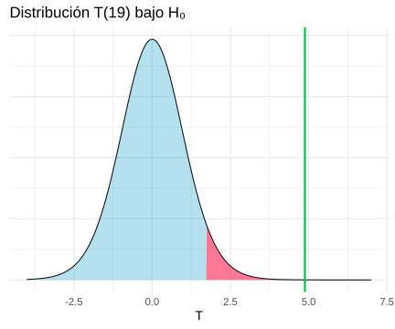
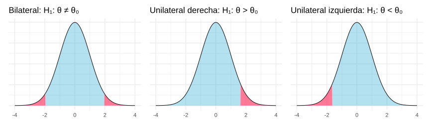
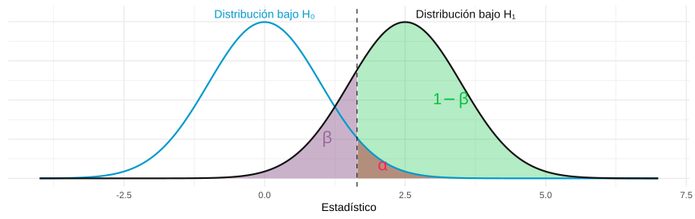
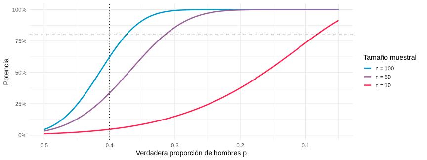
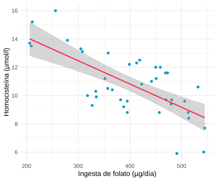

Introducción a los contrastes de hipótesis

Errores, p-valores, potencia y principales contrastes en Nutrigenómica
Introducción a los contrastes de hipótesis
En muchos estudios de Nutrigenómica no queremos estimar un parámetro, sino tomar una decisión sobre él:
Definición 1 (Hipótesis nula y alternativa)
Ejemplo 1 Para estudiar si los portadores AA de FTO pierden de media menos peso que los TT: \[ H_0: \mu_{AA} = \mu_{TT} \qquad H_1: \mu_{AA} < \mu_{TT}. \]
Un contraste de hipótesis funciona como un juicio penal:
Juicio
Contraste
Importante
La ausencia de evidencia no es evidencia de ausencia. Un estudio pequeño que no encuentra interacción gen-dieta no demuestra que no exista.
Según la forma de \(H_1\) el contraste puede ser:
Al decidir con una muestra podemos equivocarnos de dos formas:
| Decisión \ Realidad | \(H_0\) cierta | \(H_0\) falsa |
|---|---|---|
| No rechazar \(H_0\) | Decisión correcta | Error de tipo II (riesgo \(\beta\)) |
| Rechazar \(H_0\) | Error de tipo I (riesgo \(\alpha\)) | Decisión correcta (potencia \(1-\beta\)) |
Definición 2 (Errores de tipo I y II)
Para controlar estos errores se fijan sus riesgos:
Ejemplo 2 Al estudiar si una variante de APOA2 modifica el efecto de la grasa saturada sobre el IMC:
¿Es peor un falso positivo o un falso negativo?
Depende de las consecuencias de cada error en cada estudio. Pensemos en estos casos:
Puede ser más grave el error de tipo I
Puede ser más grave el error de tipo II
Importante
No se pueden reducir los dos errores a la vez con un tamaño muestral fijo: al bajar \(\alpha\) aumenta \(\beta\). Por eso conviene elegir \(\alpha\) según el coste de cada error y aumentar el tamaño muestral para controlar \(\beta\).
Estadístico del contraste y regiones de rechazo
Definición 3 (Estadístico del contraste) El estadístico del contraste es una función de la muestra que mide la discrepancia entre los datos y \(H_0\), y cuya distribución es conocida cuando \(H_0\) es cierta.
Normalmente tiene la forma \[ \mbox{Estadístico} = \frac{\mbox{Estimación} - \mbox{Valor bajo } H_0}{\mbox{Error estándar}}. \]
Ejemplo 3 Para contrastar si la homocisteína media de los homocigotos TT de MTHFR supera el umbral de 12 µmol/l, \(H_0: \mu = 12\) frente a \(H_1: \mu > 12\), se usa el estadístico \[ T = \frac{\bar X - 12}{S/\sqrt{n}} \sim T(n-1) \quad \mbox{si } H_0 \mbox{ es cierta.} \] Valores de \(T\) próximos a 0 son compatibles con \(H_0\); valores grandes son evidencia a favor de \(H_1\).
Definición 4 (Región de aceptación y región de rechazo)

Región de aceptación y región de rechazo con \(\alpha = 0.05\) y estadístico \(N(0,1)\).
Ejemplo 4 Con las 20 mediciones de homocisteína de los homocigotos TT de MTHFR (\(\bar x = 14.44\), \(s = 2.24\)), contrastar \(H_0: \mu = 12\) frente a \(H_1: \mu > 12\) con \(\alpha = 0.05\).
El estadístico (verde) cae en la región de rechazo: rechazamos \(H_0\) y concluimos que la homocisteína media supera los 12 µmol/l.

Riesgo alfa y p-valor
Definición 5 (Nivel de significación) El nivel de significación o riesgo \(\alpha\) es la probabilidad máxima de cometer un error de tipo I que estamos dispuestos a asumir. Lo fija el investigador antes de ver los datos.
Nota
Elegir \(\alpha\) es una decisión sobre el coste de un falso positivo. En un estudio exploratorio de metilación se puede tolerar un \(\alpha\) mayor (controlando la FDR) que en un ensayo que va a fundamentar una recomendación dietética.
Definición 6 (p-valor) El p-valor es la probabilidad de obtener, si \(H_0\) es cierta, un valor del estadístico igual o más extremo (en la dirección de \(H_1\)) que el observado en la muestra.
El p-valor (área roja) mide la compatibilidad de los datos con \(H_0\): cuanto menor es, más evidencia hay en contra de \(H_0\).
Fijado el riesgo \(\alpha\) antes de ver los datos, se calcula el p-valor con la muestra y se decide:
Regla de decisión basada en el p-valor
Esta regla lleva a la misma decisión que comprobar si el estadístico cae en la región de rechazo.
Ejemplo 5 En el ejemplo de la homocisteína, el p-valor es la probabilidad de que una \(T(19)\) supere el valor observado: \[ \mbox{p-valor} = P(T \geq 4.880) = < 0.0001. \]
| Estadístico | Grados de libertad | p-valor | Intervalo de confianza |
|---|---|---|---|
| t = 4.880 | 19 | < 0.0001 | [13.575, +∞] |
Como el p-valor es menor que \(\alpha = 0.05\), rechazamos \(H_0\). Llegamos a la misma conclusión que con la región de rechazo, pero el p-valor indica además cuánta evidencia hay en contra de \(H_0\).
Lo que SÍ es
Lo que NO es
Significación estadística no es relevancia clínica
En un biobanco con 400 000 personas, una diferencia de 0.1 kg/m² de IMC entre genotipos puede tener un p-valor de \(10^{-20}\) y no tener ninguna relevancia nutricional. Hay que acompañar siempre el p-valor del tamaño del efecto y su intervalo de confianza.
Un contraste bilateral con nivel de significación \(\alpha\) rechaza \(H_0: \theta = \theta_0\) si y solo si \(\theta_0\) queda fuera del intervalo de confianza de nivel \(1-\alpha\).
Ejemplo 6 En el ejemplo de la suplementación con omega-3, contrastamos si el cambio medio de los triglicéridos es 0, \(H_0: \mu_d = 0\) frente a \(H_1: \mu_d \neq 0\).
| Estadístico | Grados de libertad | p-valor | Intervalo de confianza |
|---|---|---|---|
| t = -7.064 | 13 | < 0.0001 | [-45.330, -24.098] |
El 0 queda fuera del intervalo y el p-valor es menor que 0.05: las dos conclusiones coinciden. El intervalo, además, informa de la magnitud del efecto.
Riesgo beta, potencia y tamaño del efecto
Definición 7 (Potencia) El riesgo \(\beta\) es la probabilidad de no rechazar \(H_0\) cuando es falsa (error de tipo II). La potencia es la probabilidad de rechazar \(H_0\) cuando es falsa: \[ \mbox{Potencia} = 1-\beta = P(\mbox{Rechazar } H_0 \mid H_1). \]
A diferencia de \(\alpha\), \(\beta\) depende del verdadero valor del parámetro bajo \(H_1\). Se suele exigir una potencia de al menos el 80% (\(\beta\leq 0.2\)).

La potencia de un contraste aumenta cuando:
Importante
Los efectos de las interacciones gen-dieta suelen ser pequeños. Muchos estudios de nutrigenética con unos cientos de participantes no tienen potencia suficiente, lo que explica la falta de replicación de muchos resultados.
Definición 8 (Tamaño del efecto) El tamaño del efecto es una medida de la magnitud de la diferencia o de la asociación, que no depende del tamaño muestral.
| Situación | Medida | Pequeño | Mediano | Grande |
|---|---|---|---|---|
| Diferencia de medias | \(d\) de Cohen \(= \dfrac{\bar x_1-\bar x_2}{s_p}\) | 0.2 | 0.5 | 0.8 |
| Diferencia de proporciones | \(h\) de Cohen \(= 2\arcsin\sqrt{p_1}-2\arcsin\sqrt{p_2}\) | 0.2 | 0.5 | 0.8 |
| Tablas de contingencia | \(w\) de Cohen o \(V\) de Cramér | 0.1 | 0.3 | 0.5 |
| ANOVA | \(\eta^2\) | 0.01 | 0.06 | 0.14 |
| Correlación | \(r\) de Pearson | 0.1 | 0.3 | 0.5 |
También son tamaños del efecto las medidas en la escala original (diferencia de kg perdidos, reducción de mg/dl de LDL) y las de riesgo, como el odds ratio por alelo en estudios de asociación genética.
Ejemplo 7 Queremos diseñar un estudio para detectar una diferencia de 2 kg en la pérdida de peso entre portadores AA y TT de FTO tras una dieta hipocalórica. Por estudios previos, la desviación típica de la pérdida de peso es de 4 kg. ¿Cuántos participantes necesitamos por grupo para tener una potencia del 80% con \(\alpha = 0.05\)?
Si el efecto fuese de solo 1 kg (\(d = 0.25\)), harían falta 253 participantes por grupo: al reducir el efecto a la mitad, el tamaño muestral se multiplica por 4.
Principales contrastes en Nutrigenómica
La elección del contraste depende de:
Ayuda
Antes de aplicar un contraste paramétrico conviene comprobar la normalidad con un gráfico Q-Q y el contraste de Shapiro-Wilk, sobre todo con muestras pequeñas.
| Objetivo | Contraste | Estadístico | Ejemplo |
|---|---|---|---|
| Media de una población | T para una muestra | \(T(n-1)\) | Homocisteína en TT de MTHFR frente a 12 µmol/l |
| Proporción de una población | Binomial / Z | \(N(0,1)\) | Prevalencia de TT frente a la de referencia |
| Varianza de una población | Chi-cuadrado | \(\chi^2(n-1)\) | Precisión de un método de medida de HbA1c |
| Medias de dos poblaciones independientes | T de Student / Welch | \(T\) | Pérdida de peso en AA frente a TT de FTO |
| Medias de dos poblaciones pareadas | T pareada | \(T(n-1)\) | Triglicéridos antes y después de omega-3 |
| Varianzas de dos poblaciones | F de Fisher | \(F(n_1-1, n_2-1)\) | Variabilidad glucémica según TCF7L2 |
| Medias de más de dos poblaciones | ANOVA | \(F(k-1, n-k)\) | IMC según genotipo AA, AT, TT de FTO |
| Correlación lineal | T de Pearson | \(T(n-2)\) | Ingesta de folato y homocisteína |
| Objetivo | Contraste | Estadístico | Ejemplo |
|---|---|---|---|
| Proporciones de dos poblaciones | Z / Chi-cuadrado 2×2 | \(\chi^2(1)\) | Normalización de homocisteína según MTHFR |
| Independencia de dos variables cualitativas | Chi-cuadrado de independencia | \(\chi^2((r-1)(c-1))\) | Genotipo de FTO y obesidad |
| Ajuste a una distribución teórica | Chi-cuadrado de bondad de ajuste | \(\chi^2(k-1-m)\) | Equilibrio de Hardy-Weinberg |
| Independencia con frecuencias esperadas < 5 | Exacto de Fisher | — | Variante rara y respuesta a la dieta |
| Dos poblaciones independientes sin normalidad | U de Mann-Whitney | \(W\) | PCR según tipo de dieta |
| Dos poblaciones pareadas sin normalidad | Rangos con signo de Wilcoxon | \(V\) | Insulina antes y después de una intervención |
| Más de dos poblaciones sin normalidad | Kruskal-Wallis | \(\chi^2(k-1)\) | Diversidad de la microbiota según dieta |
| Correlación monótona | Spearman | \(\rho\) | Fibra dietética y abundancia de Bifidobacterium |
| Muchos contrastes simultáneos | Corrección de Bonferroni / FDR | — | Expresión diferencial, EWAS, GWAS |
Ejemplo 8 ¿Supera la homocisteína media de los homocigotos TT de MTHFR con baja ingesta de folato el umbral de 12 µmol/l?
\(H_0: \mu = 12\) frente a \(H_1: \mu > 12\).
| Grupo | n | Media | Desv. típica |
|---|---|---|---|
| Homocisteína (µmol/l) | 20 | 14.44 | 2.24 |
| Estadístico | Grados de libertad | p-valor | Intervalo de confianza |
|---|---|---|---|
| t = 4.880 | 19 | < 0.0001 | [13.575, +∞] |
El contraste de Shapiro-Wilk no detecta falta de normalidad (p = 0.921). Rechazamos \(H_0\): la homocisteína media supera los 12 µmol/l.
Ejemplo 9 En una cohorte de 250 personas se encuentran 38 homocigotos TT de MTHFR C677T (\(\hat p = 0.152\)). ¿Es la prevalencia del genotipo TT distinta del 10% descrito en población del norte de Europa?
\(H_0: p = 0.10\) frente a \(H_1: p \neq 0.10\).
| Estadístico | Grados de libertad | p-valor | Intervalo de confianza |
|---|---|---|---|
| Número de TT = 38.000 | — | 0.0109 | [0.110, 0.203] |
Con el contraste exacto binomial el p-valor es menor que 0.05: la prevalencia de TT en la cohorte es mayor que el 10%.
Ejemplo 10 Un método de medida de la HbA1c capilar se considera preciso si su desviación típica es menor de 0.3 %. Con 15 mediciones se obtiene \(s = 0.252\). ¿Cumple el nuevo protocolo este requisito?
\(H_0: \sigma = 0.3\) frente a \(H_1: \sigma < 0.3\).
\[ \chi^2 = \frac{(n-1)s^2}{0.3^2} = \frac{14\cdot 0.0635}{0.09} = 9.881 \qquad \mbox{p-valor} = P(\chi^2(14) \leq 9.881) = 0.2292. \]
Aunque la desviación típica muestral es menor que 0.3, con solo 15 mediciones no hay evidencia suficiente para afirmar que \(\sigma < 0.3\). Haría falta una muestra mayor.
Ejemplo 11 ¿Pierden menos peso los homocigotos AA de FTO que los TT tras 6 meses de dieta hipocalórica?
\(H_0: \mu_{AA} = \mu_{TT}\) frente a \(H_1: \mu_{AA} < \mu_{TT}\).
| Grupo | n | Media | Desv. típica |
|---|---|---|---|
| AA (alelo de riesgo) | 18 | 4.31 | 1.91 |
| TT (alelo protector) | 25 | 6.74 | 2.79 |
| Estadístico | Grados de libertad | p-valor | Intervalo de confianza |
|---|---|---|---|
| t = -3.382 | 40.94 | 0.0008 | [−∞, -1.218] |
Con el contraste de Welch (varianzas distintas) rechazamos \(H_0\): los homocigotos AA pierden de media menos peso.
Ejemplo 12 ¿Reduce la suplementación con omega-3 los triglicéridos?
\(H_0: \mu_d = 0\) frente a \(H_1: \mu_d < 0\), con \(d = \mbox{después} - \mbox{antes}\).
| Grupo | n | Media | Desv. típica |
|---|---|---|---|
| Antes | 14 | 247.00 | 38.20 |
| Después | 14 | 212.29 | 27.35 |
| Diferencia | 14 | -34.71 | 18.39 |
| Estadístico | Grados de libertad | p-valor | Intervalo de confianza |
|---|---|---|---|
| t = -7.064 | 13 | < 0.0001 | [−∞, -26.012] |
Las diferencias son compatibles con la normalidad (Shapiro-Wilk, p = 0.188). Rechazamos \(H_0\): el omega-3 reduce los triglicéridos.
Ejemplo 13 ¿Es más variable la respuesta glucémica postprandial en los portadores TT de TCF7L2 que en los CC?
\(H_0: \sigma^2_{TT} = \sigma^2_{CC}\) frente a \(H_1: \sigma^2_{TT} > \sigma^2_{CC}\).
| Grupo | n | Media | Desv. típica |
|---|---|---|---|
| TT | 16 | 214.5 | 47.24 |
| CC | 20 | 191.1 | 24.40 |
| Estadístico | Grados de libertad | p-valor | Intervalo de confianza |
|---|---|---|---|
| F = 3.747 | 15 y 19 | 0.0039 | [1.677, +∞] |
Rechazamos \(H_0\): la respuesta glucémica es más variable en los portadores TT.
Ejemplo 14 ¿Difiere el IMC medio entre los tres genotipos de FTO rs9939609?
\(H_0: \mu_{AA} = \mu_{AT} = \mu_{TT}\) frente a \(H_1\): al menos una media es distinta.
| Fuente | gl | Suma de cuadrados | Cuadrado medio | F | p-valor |
|---|---|---|---|---|---|
| Genotipo | 2 | 137.1 | 68.55 | 4.509 | 0.0119 |
| Residual | 247 | 3755.0 | 15.20 |
Rechazamos \(H_0\). Las comparaciones dos a dos se hacen después con correcciones como la de Tukey.

Ejemplo 15 ¿Existe relación lineal entre la ingesta de folato (µg/día) y la homocisteína plasmática en 40 adultos?
\(H_0: \rho = 0\) frente a \(H_1: \rho \neq 0\).
| Estadístico | Grados de libertad | p-valor | Intervalo de confianza |
|---|---|---|---|
| t = -5.941 | 38 | < 0.0001 | [-0.827, -0.488] |
Rechazamos \(H_0\): a mayor ingesta de folato, menor homocisteína.

Ejemplo 16 Con folato, la homocisteína se normaliza en 52 de 70 portadores CC/CT de MTHFR (74.3%) y en 24 de 45 homocigotos TT (53.3%). ¿Es distinta la proporción de normalización según el genotipo?
\(H_0: p_{CC/CT} = p_{TT}\) frente a \(H_1: p_{CC/CT} \neq p_{TT}\).
| Estadístico | Grados de libertad | p-valor | Intervalo de confianza |
|---|---|---|---|
| χ² = 5.365 | 1 | 0.0205 | [0.031, 0.388] |
Rechazamos \(H_0\): la proporción de normalización es mayor en los portadores CC/CT.
Ejemplo 17 En una muestra de 600 adultos se clasifica a cada persona según su genotipo de FTO y su estado ponderal. ¿Son independientes ambas variables?
\(H_0\): el genotipo y el estado ponderal son independientes frente a \(H_1\): están asociados.
Frecuencias observadas
| Genotipo | Normopeso | Sobrepeso | Obesidad |
|---|---|---|---|
| TT | 40 | 45 | 35 |
| AT | 110 | 105 | 85 |
| AA | 95 | 55 | 30 |
Frecuencias esperadas bajo \(H_0\)
| Genotipo | Normopeso | Sobrepeso | Obesidad |
|---|---|---|---|
| TT | 49.0 | 41.0 | 30 |
| AT | 122.5 | 102.5 | 75 |
| AA | 73.5 | 61.5 | 45 |
| Estadístico | Grados de libertad | p-valor | Intervalo de confianza |
|---|---|---|---|
| χ² = 17.523 | 4 | 0.0015 | — |
Rechazamos \(H_0\): el estado ponderal está asociado con el genotipo de FTO.
Ejemplo 18 En una muestra de 500 personas se observan 92 AA, 236 AT y 172 TT para rs9939609. ¿Está la muestra en equilibrio de Hardy-Weinberg?
\(H_0\): las frecuencias genotípicas son \(p^2\), \(2pq\), \(q^2\) frente a \(H_1\): no lo son.
La frecuencia estimada del alelo A es \(\hat p = \frac{2\cdot 92 + 236}{1000} = 0.42\).
| Genotipo | Observados | Esperados |
|---|---|---|
| AA | 92 | 88.2 |
| AT | 236 | 243.6 |
| TT | 172 | 168.2 |
\(\chi^2 = \sum\frac{(O-E)^2}{E} = 0.487\) con \(3 - 1 - 1 = 1\) grado de libertad (se descuenta el parámetro \(p\) estimado), p-valor = 0.4854.
No hay evidencia de desviación del equilibrio de Hardy-Weinberg, lo que respalda la calidad del genotipado.
Ejemplo 19 Se estudia la respuesta a una dieta cetogénica en portadores de la variante Pro12Ala de PPARG. Como hay frecuencias esperadas menores que 5, se usa el contraste exacto de Fisher.
\(H_0\): la respuesta es independiente de la variante frente a \(H_1\): están asociadas.
| Variante | Respondedor | No respondedor |
|---|---|---|
| Ala12 | 7 | 2 |
| Pro12Pro | 18 | 33 |
| Odds ratio | Intervalo de confianza del 95% | p-valor |
|---|---|---|
| 6.21 | [1.04, 67.54] | 0.0268 |
Rechazamos \(H_0\): los portadores de Ala12 responden más a la dieta.
Ejemplo 20 La PCR ultrasensible es muy asimétrica. ¿Es distinta entre participantes con dieta mediterránea y con dieta control?
\(H_0\): ambas distribuciones son iguales frente a \(H_1\): una tiende a dar valores mayores que la otra.
| Dieta | n | Mediana | Rango intercuartílico |
|---|---|---|---|
| Mediterránea | 22 | 1.46 | 0.79 |
| Control | 24 | 3.07 | 2.68 |
| Estadístico | Grados de libertad | p-valor | Intervalo de confianza |
|---|---|---|---|
| W = 97.000 | — | 0.0003 | — |
El p-valor es muy pequeño: la PCR tiende a ser menor con la dieta mediterránea.
Ejemplo 21 ¿Difiere el índice de diversidad de Shannon de la microbiota intestinal entre participantes con dieta omnívora, vegetariana y vegana (20 por grupo)?
\(H_0\): las tres distribuciones son iguales frente a \(H_1\): al menos una es distinta.
| Estadístico | Grados de libertad | p-valor | Intervalo de confianza |
|---|---|---|---|
| H = 14.684 | 2 | 0.0006 | — |
Rechazamos \(H_0\): la diversidad de la microbiota depende del tipo de dieta.

Ejemplo 22 Se estudia la expresión de 10 genes del metabolismo lipídico tras una intervención con dieta mediterránea. Ajustamos los p-valores con Bonferroni y con la FDR de Benjamini-Hochberg.
| Gen | p-valor | Bonferroni | FDR (BH) |
|---|---|---|---|
| SREBF1 | 0.0004 | 0.004 | 0.0040 |
| PPARA | 0.0030 | 0.030 | 0.0150 |
| CPT1A | 0.0090 | 0.090 | 0.0300 |
| FASN | 0.0120 | 0.120 | 0.0300 |
| LPL | 0.0210 | 0.210 | 0.0420 |
| SCD | 0.0340 | 0.340 | 0.0567 |
| ACACA | 0.0480 | 0.480 | 0.0686 |
| CD36 | 0.2100 | 1.000 | 0.2625 |
| APOA1 | 0.4700 | 1.000 | 0.5222 |
| LIPE | 0.8300 | 1.000 | 0.8300 |
Sin corregir, 7 genes serían significativos al 5%; con Bonferroni, 2, y con la FDR, 5. Bonferroni controla la probabilidad de algún falso positivo y es muy conservador; la FDR controla la proporción esperada de falsos descubrimientos y es la más usada en ómicas.
Ejercicio 1 Para cada uno de los siguientes estudios, indicar las hipótesis y el contraste más adecuado.